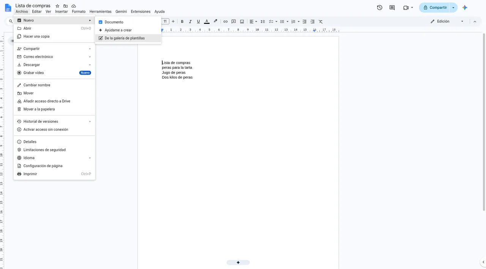
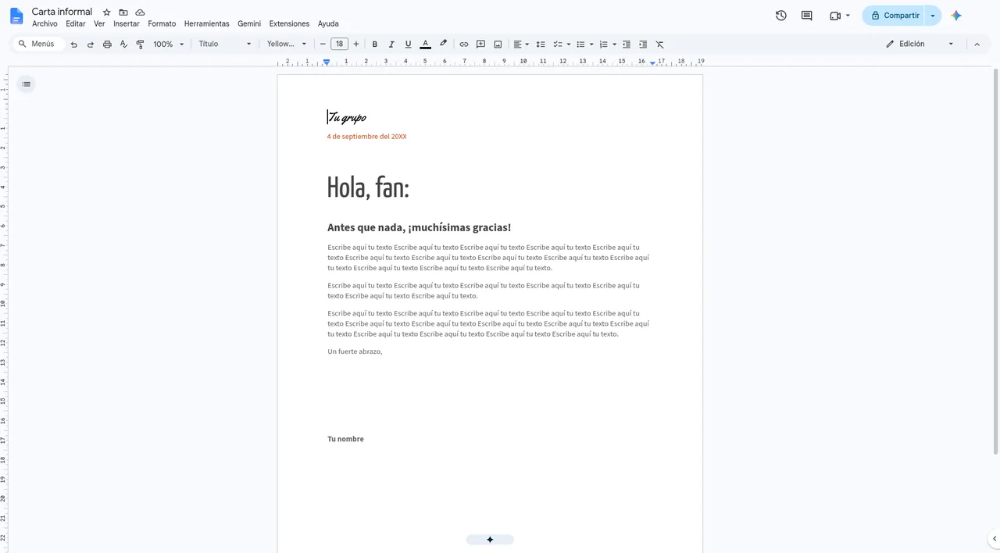
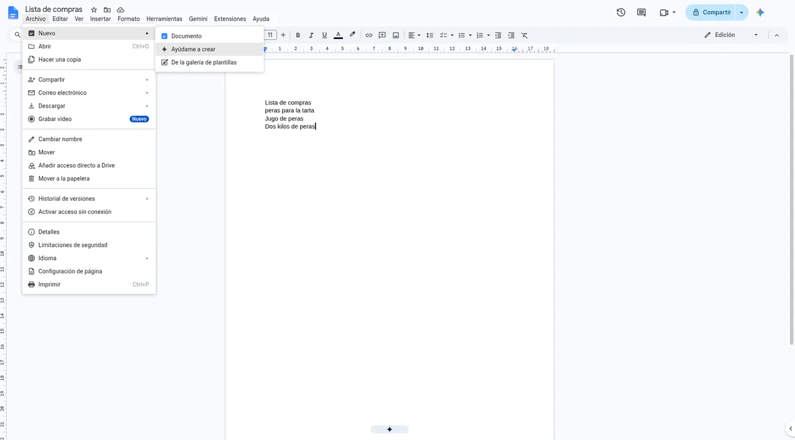
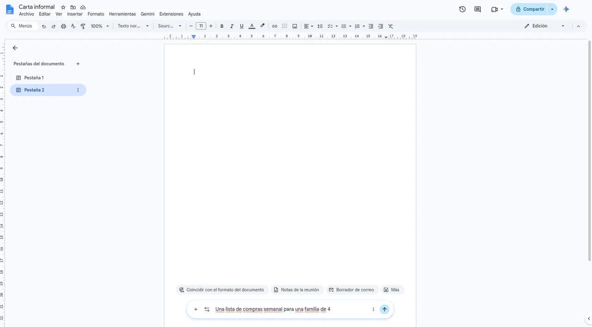
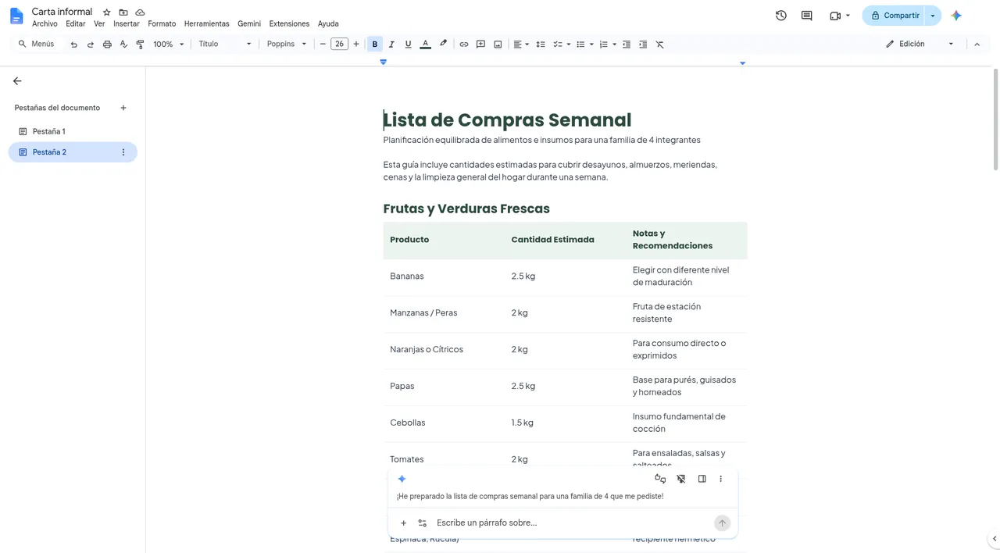

Curso de Google Documentos › Archivo › Lección 2
Lección 2 de 53 · menú Archivo
Cómo usar plantillas en Google Docs (y 'Ayúdame a crear')
Fecha del video: · Programado
¿Vas a empezar un documento en blanco? En Google Docs no hace falta arrancar de cero: usá una plantilla o pedile a Gemini un primer borrador con «Ayúdame a crear».
Paso 1: abrí Archivo → Nuevo → De la galería de plantillas
En cualquier documento, tocá «Archivo», andá a «Nuevo» y tocá «De la galería de plantillas».

Paso 2: elegí una plantilla
Se abre la Galería de plantillas, con currículums, cartas, informes y más. Tocá la que quieras usar: se crea un documento nuevo, con el diseño listo, para que lo completes.


Tip: también podés abrir la galería desde la pantalla de inicio de docs.google.com, arriba a la derecha, en «Galería de plantillas».
Paso 3: o pedile un borrador a «Ayúdame a crear»
Si preferís que Gemini te arme un primer texto, andá a Archivo → Nuevo → Ayúdame a crear. Se abre una pestaña nueva con un cuadro: escribí lo que necesitás (en el ejemplo, una lista de compras semanal) y tocá la flecha para enviar. En unos segundos aparece el borrador, listo para revisar.



Mirá el Short
Estreno del Short: 22/11/2026 · 09:00 (hora Argentina)
Video relacionado: Google Docs: menú Archivo paso a paso (tutorial completo) — el video largo del menú Archivo (verlo en YouTube).
Fuente oficial: Ayuda de Editores de Documentos de Google. Capturas propias en un documento de ejemplo («Lista de compras»). El video usa voz generada con IA.